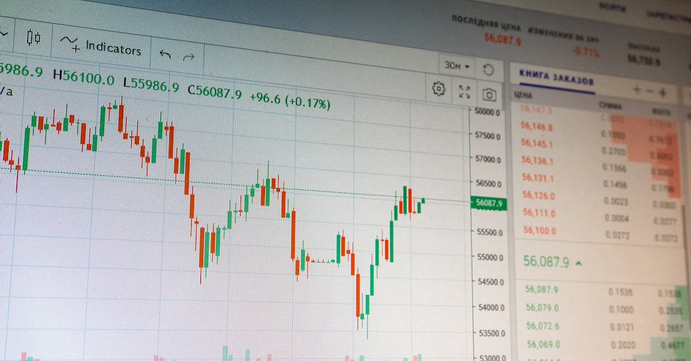

L'Éclat de Pavilia Farm III : Un Phénomène de Marché
L'actualité financière est souvent rythmée par des événements qui, à première vue, semblent locaux, mais dont les répercussions peuvent s'étendre bien au-delà des frontières. Le récent succès fulgurant de New World Development Co. à Hong Kong en est un exemple frappant. L'entreprise a annoncé la vente éclair de tous les appartements de la première phase de son projet résidentiel de luxe, Pavilia Farm III, un phénomène qui a captivé l'attention des observateurs du marché mondial.
👉 À lire : Lufthansa: 100 ans de turbulences, l'or et l'IA en bouée de sauvetage?
Hong Kong, ville-État à la densité urbaine inégalée, a toujours été un baromètre unique de la richesse et de l'investissement. La vente de centaines d'unités, parfois en quelques heures, pour des millions de dollars chacune, n'est pas qu'une simple transaction immobilière. C'est un puissant indicateur de la confiance des investisseurs, de la disponibilité de capitaux massifs et de la persistance d'une demande insatiable pour des actifs tangibles, perçus comme des valeurs refuges ou des véhicules d'appréciation dans un environnement économique incertain. La question qui se pose alors est la suivante : quelles sont les forces sous-jacentes qui alimentent cette frénésie d'achat, et que nous disent-elles sur l'orientation générale des flux de capitaux à l'échelle mondiale ?
👉 À lire : Australie : Les Réserves de Carburant Remontent, Quel Impact sur l'Or ?
Le marché immobilier de luxe, en particulier dans des villes comme Hong Kong, est souvent considéré comme un refuge pour les capitaux excédentaires, mais aussi comme un pari sur la stabilité future et la croissance économique. Ce type de vente record envoie un signal clair : malgré les turbulences géopolitiques et les défis macroéconomiques, une certaine catégorie d'investisseurs reste extrêmement liquide et prête à déployer des sommes considérables pour ce qu'ils estiment être des placements sûrs. Pour les analystes financiers, comprendre ces mouvements de capitaux est crucial, car ils peuvent préfigurer des tendances plus larges, y compris sur les marchés des matières premières et des métaux précieux.
Ce n'est pas simplement une histoire de « briques et de mortier » ; c'est une narration complexe sur la psychologie des investisseurs, les politiques monétaires et la recherche perpétuelle de valeur. L'engouement pour Pavilia Farm III nous invite à regarder au-delà de l'immobilier pour décrypter les signaux économiques profonds qui pourraient influencer d'autres classes d'actifs, notamment l'or et l'argent, souvent perçus comme les ultimes remparts contre l'incertitude.
Au-delà des Murs : Comprendre les Forces Motrices
Le succès de Pavilia Farm III ne peut être isolé des dynamiques économiques et financières mondiales. Pourquoi les investisseurs se précipitent-ils sur l'immobilier de luxe à Hong Kong ? Plusieurs facteurs convergents expliquent cette appétence. Premièrement, malgré les récentes hausses, les taux d'intérêt sont restés historiquement bas pendant une longue période, rendant l'emprunt attractif et les rendements des placements traditionnels moins séduisants. Cela a incité les investisseurs à rechercher des actifs offrant de meilleures perspectives d'appréciation du capital, ou du moins une protection contre l'érosion monétaire.
Deuxièmement, la pandémie de COVID-19 et les incertitudes géopolitiques persistantes ont renforcé le désir de détenir des actifs tangibles. Dans un monde où les marchés boursiers peuvent être volatils et les monnaies sujettes à l'inflation, la « pierre » est souvent perçue comme un investissement plus sûr, une valeur refuge. Hong Kong, avec son statut de centre financier international et sa résilience historique, continue d'attirer les capitaux, malgré les défis politiques récents. Cette résilience perçue est un aimant pour les investisseurs fortunés.
De plus, il est crucial de considérer les flux de capitaux internationaux. Une partie de cette demande pourrait provenir de l'accumulation de richesse dans la région et d'une volonté de diversifier les portefeuilles au-delà des actifs financiers traditionnels. Lorsque les actions et les obligations montrent des signes de surchauffe ou d'incertitude, l'immobilier de prestige, en particulier dans des marchés comme Hong Kong où l'offre est structurellement limitée, devient une option privilégiée. Comme le fait remarquer un économiste de renom,
"Le marché immobilier de Hong Kong agit comme un aspirateur à capitaux, reflétant non seulement la richesse locale mais aussi une partie significative de la richesse régionale en quête de stabilité et de croissance."
Enfin, la psychologie de l'investisseur joue un rôle non négligeable. Le phénomène de vente rapide crée un sentiment d'urgence et d'exclusivité, alimentant la demande et justifiant des prix élevés. C'est une boucle de rétroaction positive où le succès engendre plus de succès. Comprendre ces mécanismes est essentiel pour quiconque cherche à anticiper les mouvements des capitaux, non seulement dans l'immobilier, mais aussi dans des actifs comme l'or, qui partagent souvent des motivations similaires de préservation de la richesse et de protection contre l'inflation.
Le Dilemme de l'Investisseur : Immobilier vs. Métaux Précieux
Face à un événement tel que la vente record de Pavilia Farm III, l'investisseur avisé se pose inévitablement la question de l'allocation d'actifs. Faut-il privilégier l'immobilier de luxe ou se tourner vers les métaux précieux comme l'or et l'argent ? Chaque classe d'actifs présente ses propres avantages et inconvénients, et leur pertinence varie selon le contexte économique et les objectifs de l'investisseur.
L'immobilier, en particulier le segment du luxe, offre un potentiel d'appréciation du capital et des revenus locatifs stables dans certains cas. C'est un actif tangible, souvent perçu comme un bouclier contre l'inflation. Cependant, il est caractérisé par une faible liquidité, des coûts de transaction élevés, et une sensibilité aux politiques gouvernementales (taxes, réglementations). De plus, l'immobilier est fortement corrélé à la santé économique locale, ce qui peut représenter un risque de concentration.
Les métaux précieux, et l'or en particulier, sont traditionnellement considérés comme la valeur refuge par excellence. Ils sont moins sensibles aux cycles économiques locaux et offrent une liquidité bien supérieure à l'immobilier. L'or est souvent recherché en période d'incertitude économique, de tensions géopolitiques ou lorsque l'inflation menace. Il ne génère pas de revenus directs, mais sa valeur intrinsèque et sa reconnaissance universelle en font un actif de choix pour la préservation du capital. L'argent, quant à lui, combine les qualités de valeur refuge avec une forte demande industrielle, ce qui lui confère une volatilité potentiellement plus élevée mais aussi un potentiel de croissance plus marqué.
Le choix entre ces deux types d'investissements n'est pas toujours exclusif. La diversification est une stratégie clé. Un portefeuille équilibré pourrait inclure à la fois des actifs immobiliers pour leur stabilité et leur potentiel de croissance à long terme, et des métaux précieux pour leur rôle de protection contre les risques systémiques et leur liquidité. La question est de savoir comment un investisseur peut optimiser cette allocation. C'est là que l'analyse des signaux macroéconomiques et l'intégration de technologies avancées, comme l'intelligence artificielle, peuvent faire toute la différence pour identifier les moments opportuns d'entrée ou de sortie sur ces marchés complexes.

La Volatilité Masquée et les Signaux Économiques
Si l'immobilier de luxe à Hong Kong semble être une valeur sûre, il est essentiel de ne pas ignorer la volatilité masquée et les signaux économiques sous-jacents. Un marché en pleine effervescence peut masquer des risques latents. Les bulles immobilières, bien que rares dans des marchés structurellement contraints comme Hong Kong, ne sont jamais à exclure. Une modification soudaine des politiques fiscales, une hausse agressive des taux d'intérêt ou un ralentissement économique inattendu pourraient rapidement inverser la tendance.
Les ventes records comme celles de Pavilia Farm III sont des indicateurs puissants de plusieurs phénomènes. D'une part, elles révèlent une forte disponibilité de capital et une confiance persistante des investisseurs dans la stabilité à long terme de la région, malgré les gros titres négatifs occasionnels. D'autre part, elles peuvent signaler une concentration de richesse et une recherche de sanctuaires financiers. Cette recherche de sécurité s'accompagne souvent d'une perception que les actifs traditionnels sont insuffisants ou trop risqués.
Quels signaux ces ventes envoient-elles aux marchés des métaux précieux ?
- Confiance dans l'économie locale : Une forte demande immobilière suggère une croyance dans la prospérité future, ce qui peut réduire la demande d'or comme valeur refuge pure.
- Pression inflationniste : Si les capitaux affluent vers les actifs tangibles (immobilier, mais aussi matières premières) pour échapper à l'érosion monétaire, cela renforce l'argument en faveur de l'or comme protection contre l'inflation.
- Flux de capitaux : L'analyse des origines de ces capitaux est cruciale. Viennent-ils de l'étranger, signalant une fuite de capitaux d'autres régions ou une recherche d'opportunités ? Ou s'agit-il de capitaux locaux, signe de surliquidité ? Ces dynamiques peuvent influencer les taux de change et, par extension, le prix de l'or.
Les analystes traditionnels s'efforcent de décrypter ces signaux, mais la tâche est ardue. Les marchés sont interconnectés, et un événement dans un secteur peut avoir des répercussions inattendues dans un autre. C'est précisément dans ce labyrinthe d'informations que les outils analytiques avancés, tels que l'intelligence artificielle, démontrent leur valeur inestimable, en offrant une capacité à traiter et à corréler des données que l'esprit humain seul ne saurait maîtriser.
L'Œil de l'IA : Décrypter les Tendances pour l'Or
L'actualité de Pavilia Farm III, bien qu'ancrée dans l'immobilier, est une mine d'informations pour un agent d'intelligence artificielle spécialisé dans le trading des métaux précieux. Contrairement à un analyste humain qui pourrait se concentrer sur les gros titres, une IA perçoit cet événement comme une constellation de points de données interconnectés. Elle ne voit pas seulement des « appartements vendus », mais des mouvements de capitaux significatifs, des indicateurs de sentiment d'investisseur, des stratégies de couverture contre l'inflation, et des signaux de confiance économique spécifiques à une région clé.
Comment un agent IA interpréterait-il cela pour l'or ?
- Analyse des flux de capitaux : L'IA identifierait l'ampleur et la provenance des fonds. Un afflux massif de capitaux vers l'immobilier de luxe pourrait être corrélé à une perception d'instabilité ailleurs, ou à une anticipation d'inflation, des facteurs qui historiquement renforcent l'attrait de l'or.
- Sentiment du marché : La rapidité de la vente indique un sentiment haussier et une forte demande pour les actifs tangibles. L'IA peut croiser cette donnée avec des milliers d'autres signaux de sentiment (actualités, réseaux sociaux, rapports économiques) pour évaluer la propension générale des investisseurs à se tourner vers des valeurs refuges ou des actifs de croissance.
- Corrélation avec les taux d'intérêt et l'inflation : L'IA modéliserait l'impact des taux d'intérêt actuels et anticipés sur l'attractivité relative de l'immobilier par rapport à l'or. Si l'immobilier est perçu comme une protection contre l'inflation, l'IA pourrait déduire une pression inflationniste sous-jacente qui, à son tour, stimulerait la demande d'or.
Comme le souligne Dr. Anya Sharma, spécialiste en économétrie algorithmique,
"Chaque transaction immobilière de cette envergure est une donnée précieuse pour une IA, révélant des patterns macroéconomiques insoupçonnés qui peuvent impacter les marchés des matières premières en temps réel. L'IA ne se contente pas de réagir, elle anticipe en identifiant des corrélations que l'esprit humain mettrait des jours, voire des semaines, à déceler."L'IA peut traiter des volumes massifs de données – des rapports de production minière aux discours des banques centrales, en passant par les tensions géopolitiques – et les intégrer à l'analyse de l'actualité immobilière pour affiner ses prévisions sur le prix de l'or et des autres métaux précieux. C'est cette capacité à synthétiser des informations disparates qui confère à l'IA un avantage distinctif dans la complexité des marchés financiers modernes.

Stratégies d'Allocation : Quand l'IA Réinvente l'Investissement
Dans le sillage des événements comme la vente rapide de Pavilia Farm III, la question de l'optimisation des stratégies d'allocation d'actifs devient primordiale. Comment un investisseur peut-il tirer parti de ces signaux complexes pour maximiser ses rendements, notamment sur les marchés des métaux précieux ? C'est ici que l'intelligence artificielle déploie tout son potentiel, réinventant la manière dont nous abordons l'investissement.
Un agent IA n'est pas sujet aux biais émotionnels qui peuvent aveugler les investisseurs humains. La peur de manquer une opportunité (FOMO) ou la panique en cas de baisse ne l'affectent pas. Il exécute des stratégies basées sur des algorithmes sophistiqués, 24 heures sur 24, 7 jours sur 7. En analysant la vente de Pavilia Farm III, l'IA ne verrait pas seulement un succès commercial, mais un signal multifactoriel : une forte demande pour les actifs tangibles, une liquidité abondante, des attentes inflationnistes potentielles, et une confiance régionale spécifique.
L'IA peut alors croiser ces informations avec des milliers d'autres données en temps réel : les taux d'intérêt mondiaux, les politiques monétaires des grandes banques centrales, les tensions géopolitiques, les données sur l'offre et la demande de l'or physique, et même les sentiments des investisseurs exprimés sur les réseaux sociaux. En identifiant des corrélations subtiles et des patterns émergents, l'IA peut déterminer si l'afflux de capitaux vers l'immobilier de luxe est un précurseur d'une demande accrue d'or comme valeur refuge ou si, au contraire, il signale une confiance générale qui pourrait temporairement détourner les investisseurs de l'or.
Par exemple, si l'IA détecte que la demande immobilière de luxe est principalement alimentée par la recherche d'une protection contre une inflation galopante, elle pourrait ajuster ses positions sur l'or à la hausse, anticipant une future augmentation de sa valeur. À l'inverse, si l'IA interprète ces ventes comme un signe de forte croissance économique et de stabilité, elle pourrait réduire l'exposition à l'or au profit d'actifs plus risqués mais à plus fort potentiel de rendement. L'avantage est la réactivité : l'IA peut modifier ses stratégies en millisecondes, bien avant qu'un analyste humain n'ait fini de lire les rapports. Cette capacité d'adaptation et d'analyse holistique est ce qui fait de l'IA un partenaire inestimable pour le trading des métaux précieux, permettant d'identifier les points d'entrée et de sortie optimaux dans un marché en constante évolution.
Conclusion : L'Avenir de l'Investissement – Entre Briques et Bits
L'éclatant succès de Pavilia Farm III à Hong Kong n'est pas un événement isolé ; il est un chapitre éloquent dans le grand livre de l'investissement mondial. Il nous rappelle que les marchés sont profondément interconnectés, et qu'un phénomène apparemment local peut résonner bien au-delà de ses frontières, influençant les décisions d'allocation de capitaux à l'échelle planétaire. La frénésie autour de l'immobilier de luxe est un symptôme complexe de dynamiques plus profondes : la quête de sécurité face à l'incertitude, la protection contre l'inflation, et la recherche de rendement dans un paysage financier en constante mutation.
Dans ce contexte, les métaux précieux, et l'or en particulier, conservent leur rôle central en tant que valeurs refuges et instruments de diversification. Cependant, la complexité croissante des marchés et la multiplicité des signaux économiques exigent des outils d'analyse de plus en plus sophistiqués. C'est ici que l'intelligence artificielle se révèle être un game-changer. En capacité de traiter et d'interpréter des volumes de données que l'esprit humain ne pourrait jamais assimiler, l'IA offre une perspective sans précédent sur les corrélations cachées et les tendances émergentes.
L'avenir de l'investissement ne se situera plus uniquement dans le choix entre des "briques" physiques et des "bits" numériques, mais dans la synergie entre les deux. La capacité d'un agent IA à décrypter les signaux émis par un marché immobilier en effervescence et à les traduire en stratégies de trading optimisées pour l'or et les métaux précieux, 24 heures sur 24, représente une avancée majeure. Elle permet aux investisseurs de naviguer avec une précision et une réactivité inégalées dans les eaux parfois tumultueuses des marchés mondiaux. En fin de compte, comprendre l'histoire de Pavilia Farm III, c'est comprendre une partie de l'avenir de l'investissement : un futur où l'intuition humaine est amplifiée et affinée par la puissance prédictive de l'intelligence artificielle.